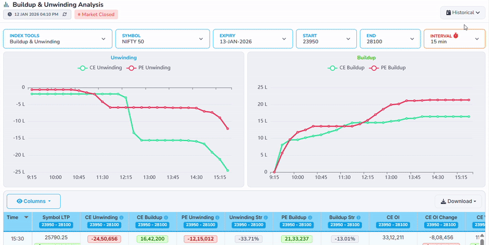
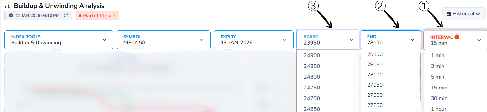
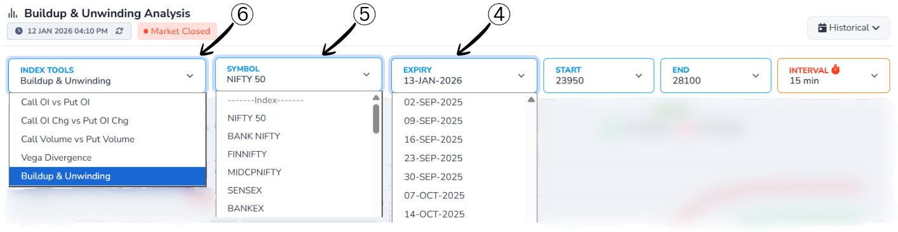
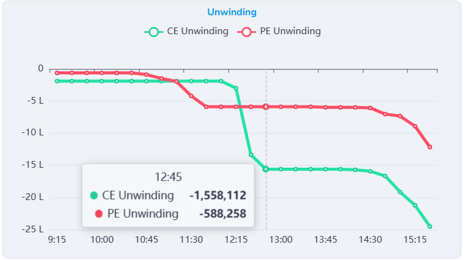
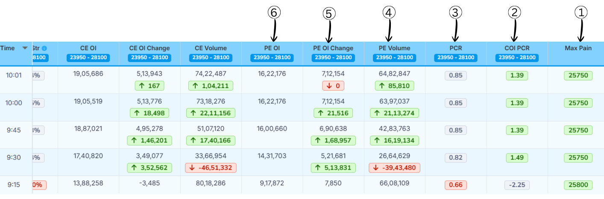
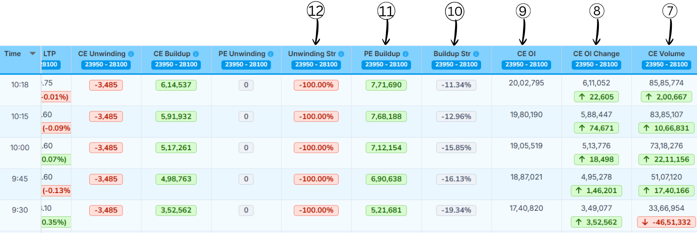
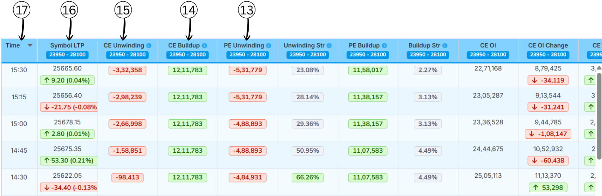
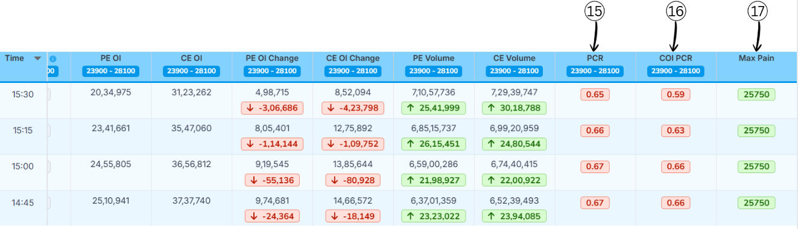

Header
1. Live Status Indicator
The Live Status Indicator shows that the displayed data is real-time market data and is being continuously refreshed It also displays the amount of time passed since the
last data update, helping users understand
how fresh the information is.
2. Last Updated Time
Last Updated Time shows the exact moment when the data on this page was last refreshed. This timestamp helps users verify the recency of the information, ensuring they are making decisions based on the most current market conditions.
Historical Data

The Historical option allows users to select a past date to view buildup and unwinding data for that specific trading day.
When a historical date is selected, the charts and values update to show how CE and PE buildup or unwinding happened during that day instead of live market data.
This helps users analyze past market behavior, compare different days, and understand how price movement and open interest changed over time.
Header1

1.Index Tools Dropdown
This dropdown allows users to select the type of analysis they want to view,
such as Buildup & Unwinding, Call OI vs Put OI, or Volume-based analysis.
Once an option is selected, the charts and data update according to the chosen analysis type.
2. Symbol Selection Dropdown
This dropdown lets users choose the market index or symbol
(for example, NIFTY 50, BANK NIFTY, FINNIFTY).
Selecting a different symbol updates the data to show buildup and unwinding
specific to that selected index.
3. Expiry Date Dropdown
This dropdown opens a list of available expiry dates.
By selecting a different expiry date, users can view
buildup and unwinding data for that specific expiry,
making it useful for historical and comparative analysis.
Header2

4.Start Strike Price Dropdown
This dropdown allows users to select the starting strike price
for the analysis range.
The data and charts will begin calculating buildup and unwinding
from this selected strike price.
5.End Strike Price Dropdown
This dropdown is used to select the ending strike price
for the analysis.
Together with the start strike, it defines the complete
strike price range included in the analysis.
6. Interval Selection Dropdown
This dropdown lets users choose the time interval
(such as 1 min, 5 min, 15 min, or 30 min) for data calculation.
A smaller interval shows more frequent changes,
while a larger interval provides a smoother and broader market view.
Chart/Graph
1. Unwinding Graph

Unwinding Chart – Explanation
The Unwinding Chart shows how existing Call (CE) and Put (PE) option positions
are reduced or closed during the trading day.
The X-axis represents time from market open (9:15 AM) to market close,
while the Y-axis represents unwinding value in Lakhs (L),
showing how much open interest is being removed.
The green line (CE Unwinding) indicates call option position exit,
while the red line (PE Unwinding) indicates put option position exit.
Values appear in the negative direction because positions are being closed.
A sharp downward move means heavy position exit.
Higher CE unwinding suggests loss of bullish interest,
while higher PE unwinding suggests loss of bearish interest.
In short:
This chart helps identify where traders are booking profits or cutting positions,
giving insight into weakening or reversing market sentiment.
2. Buildup Graph
Buildup Chart – Explanation
The Buildup Chart shows how new Call (CE) and Put (PE) option positions
are created throughout the trading day.
The X-axis represents time from market open (9:15 AM) to market close,
while the Y-axis represents buildup value in Lakhs (L),
indicating the amount of fresh open interest added.
The green line (CE Buildup) reflects call option position creation and
is generally associated with bullish expectations.
The red line (PE Buildup) reflects put option position creation,
usually indicating bearish expectations or strong support levels.
A rising line means more new positions are being added.
Higher PE buildup suggests market support, while higher CE buildup indicates bullish sentiment.
If both rise together, the market may remain range-bound or volatile.
In short:
This chart helps to understand market sentiment over time
by tracking how aggressively call and put positions are built during the day.
Column/Download
1.Columns Selection
The Columns option allows users to enable or disable table columns
based on their preference.
2.Download Options
The Download option lets users export the displayed data
for offline use or record keeping.
Column-1

1. Time
This column shows the exact time at which the market data was recorded.
In simple words, it tells when the buildup and unwinding values were captured
during the trading day, helping users track changes over different time intervals.
2. Symbol LTP (Last Traded Price)
LTP stands for Last Traded Price of the selected symbol
(such as NIFTY 50).
It shows the latest price at which the symbol was traded at that time.
A green arrow indicates a price increase, while a red arrow indicates a price decrease
compared to the previous interval.
Column-2

3. PE Unwinding
This column shows how many Put Option (PE) positions
are being closed or reduced. It tells us how much traders are exiting put positions.
How to understand the value:
- Values are shown in negative numbers because positions are being closed
- A larger negative value indicates more put positions are being exited
- Higher PE unwinding suggests traders are reducing bearish bets, indicating a shift in market sentiment
4. CE Unwinding
This column shows how many Call Option (CE) positions
are being closed or reduced. It tells us how much traders are exiting call positions.
How to understand the value:
- Values are shown in negative numbers because positions are being closed
- A larger negative value indicates more call positions are being exited
- Higher CE unwinding suggests traders are reducing bullish bets, indicating a shift in market sentiment
5. Unwinding Strength (Unwinding Str)
Unwinding Strength shows the relative strength between Call unwinding and Put unwinding.
It helps identify whether bullish or bearish positions are being exited more aggressively.
Formula:
Unwinding Str % = (CE Unwinding − PE Unwinding) / (|CE Unwinding| + |PE Unwinding|) × 100
How to read the result:
- ≥ +60% → Bullish (Call unwinding is stronger)
- -60% to +60% → Neutral (Both sides are balanced)
- ≤ -60% → Bearish (Put unwinding is stronger)
Example:
- CE Unwinding = -15,00,000
- PE Unwinding = -5,00,000
Applying the formula:
Unwinding Str % = (-15,00,000 − (-5,00,000)) / (15,00,000 + 5,00,000) × 100
Unwinding Str % = (-10,00,000 / 20,00,000) × 100
Unwinding Str % = -50%
Result: Unwinding Str % = -50%, which indicates Neutral sentiment
with slightly stronger put-side unwinding.
Column-3

6. PE Buildup
This column shows how many Put Option (PE) positions
are being newly added. It tells us how much traders are creating new put positions.
How to understand the value:
- Values are shown in positive numbers
- A larger value indicates more put positions are being added
7. CE Buildup
This column shows how many Call Option (CE) positions
are being newly added. It tells us how much traders are creating new call positions.
How to understand the value:
- Values are shown in positive numbers
- A larger value indicates more call positions are being added
8. Buildup Strength (Buildup Str)
Buildup Strength shows the relative strength between Put buildup and Call buildup.
It helps identify whether the market is more bullish, bearish, or neutral.
Formula:
Buildup Str % = (PE Buildup − CE Buildup)/(CE Buildup + PE Buildup) × 100
How to read the result:
- ≥ +60% → Bullish (Put buildup is much stronger)
- -60% to +60% → Neutral (Both sides are balanced)
- ≤ -60% → Bearish (Call buildup is much stronger)
Example:
- PE Buildup = 20,00,000
- CE Buildup = 10,00,000
Applying the formula:
Buildup Str % = (20,00,000 − 10,00,000)/(20,00,000 + 10,00,000) × 100
Buildup Str % = (10,00,000 / 30,00,000) × 100
Buildup Str % = 33.33%
Result: Buildup Str % = 33.33%, which indicates Bullish sentiment
as it's above +60% threshold, meaning put buildup is notably stronger than call buildup.
Column-4
9. PE OI (Put Open Interest)
What it means:
This column shows the total number of active Put Option (PE) positions
currently open in the market.
In simple words:
It tells us how many put contracts are still open.
- Higher PE OI → Strong support area
- Shows heavy positioning on the put side
10. CE OI (Call Open Interest)
What it means:
This column shows the total number of active Call Option (CE) positions
currently open in the market.
In simple words:
It tells us how many call contracts are still open.
- Higher CE OI → Strong resistance area
- Shows heavy positioning on the call side
11. PE OI Change
What it means:
This column shows the change in Put Open Interest
compared to the previous time interval.
In simple words:
It tells whether put positions are being added or closed.
- Green value → New PE positions added
- Red value → PE positions closed
12. CE OI Change
What it means:
This column shows the change in Call Open Interest
compared to the previous time interval.
In simple words:
It tells whether call positions are being added or closed.
- Green value → New CE positions added
- Red value → CE positions closed
13. PE Volume
What it means:
This column shows the number of Put Option contracts traded
during that time interval.
In simple words:
It tells how actively put options are being traded.
- High volume → Strong interest on put side
- Confirms strength of PE buildup or unwinding
14. CE Volume
What it means:
This column shows the number of Call Option contracts traded
during that time interval.
In simple words:
It tells how actively call options are being traded.
- High volume → Strong interest on call side
- Confirms strength of CE buildup or unwinding
Column-5

15. Put Call Ratio
Put–Call Ratio (PCR) is a market‑sentiment indicator that compares how many put options are being traded (or
are open) to how many call options are being traded (or are open) for the same index or stock. It tells you
whether traders, as a group, are more focused on protection/downside (puts) or on upside (calls).
Formula of Put–Call Ratio (PCR)
Formula:
Put–Call Ratio (PCR) = Total Put Open Interest ÷ Total Call Open Interest
Example:
- Total Put Open Interest = 24,00,000
- Total Call Open Interest = 20,00,000
Calculation:
PCR = 24,00,000 ÷ 20,00,000 = 1.20
What PCR Values Mean?
| PCR Range |
Market View |
| > 1.2 |
Bullish |
| 0.8 – 1.2 |
Neutral |
| < 0.8 |
Bearish |
16. COI PCR(Change in Open Interest Put–Call Ratio)
It shows which side added more fresh positions today —the put seller or the call
seller.
COI PCR = Change in Put OI ÷ Change in Call OI
-
If COI PCR is above 1:
• More put OI was added than call OI.
• Put seller are stronger → the market has a bullish bias.
-
If COI PCR is below 1:
• More call OI was added than put OI.
• Call seller are stronger → the market has a bearish bias.
Example 1
- Put OI added today: 30,000
- Call OI added today: 10,000
- COI PCR =30,000 ÷ 10,000 = 3
- This means put sellers are much more active, so the market has a bullish
Example 2
- Put OI added today: 15,000
- Call OI added today: 30,000
- COI PCR = 15,000 ÷ 30,000 = 0.5
- This means call sellers are more active, so the market has a bearish
17.MaxPain
Max pain (also called “maximum pain price”) is the strike price where option buyers, in total, would lose
the most money at expiry and option sellers would lose the least amount of money .
At this price, the maximum number of call and put options expire worthless or with very little value, so
most buyers lose their premiums while sellers keep most of what they collected.
Many traders believe that, as expiry comes closer, the underlying price sometimes moves toward this
max‑pain strike, because big option sellers try to hedge or manage their risk around that level. so max
pain is not a guarantee or a magic target, just one way to see how positions are stacked in the option
chain.